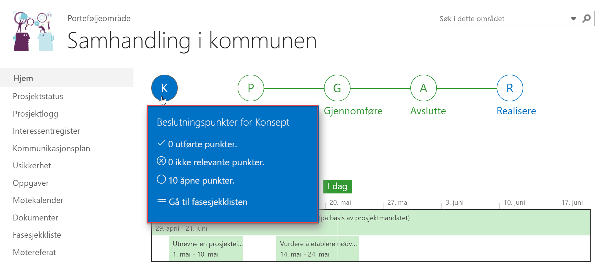
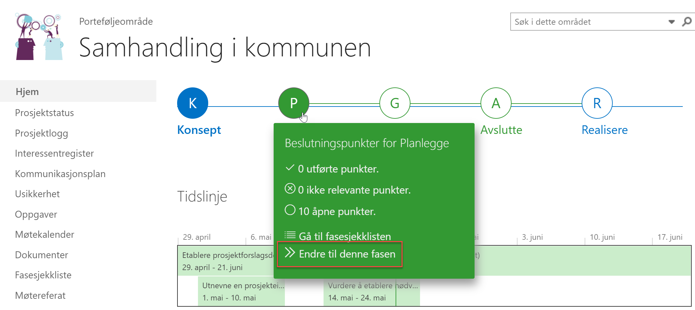
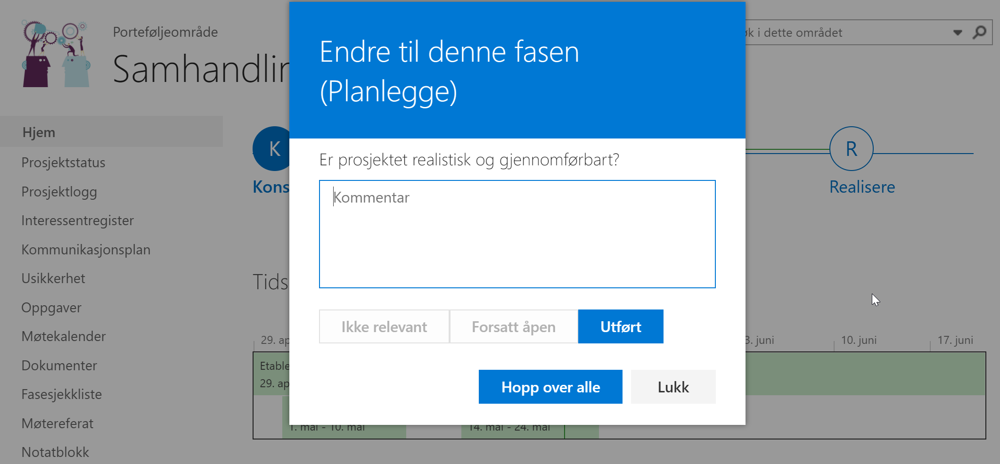
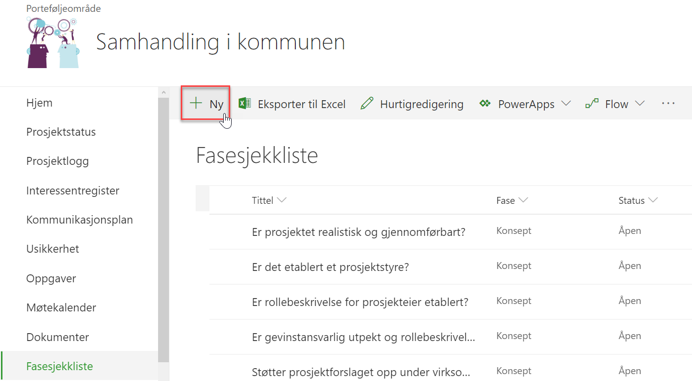
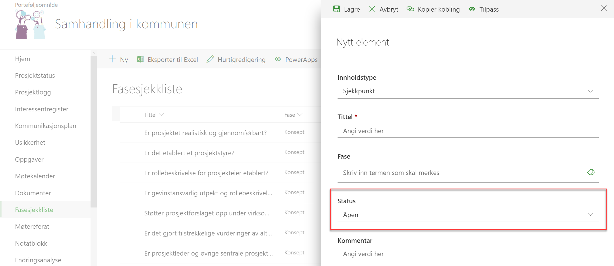

Fasesjekklisten er et verktøy som lar prosjektdeltagere og prosjektleder eller prosjekteier gå gjennom en forhåndsdefinert sjekkliste underveis i eller ved endring av en fase i prosjektet. I noen prosjekter er ikke alle sjekkpunkter like relevante. Dette avsnittet viser hvordan sjekklisten fungerer, og hvordan du kan legge til, endre eller slette sjekkpunkter i listen.
I faseviseren på forsiden av prosjektet får du en indikasjon på hvor mange sjekkpunkter som er utført ila hver fase ved å holde musepekeren over en fase.


Når du har kommet til faseendring i prosjektet, trykker du på Endre til denne fasen under den nye fasen (i bildet under vil vi endre fra Konsept-fasen til Planlegge-fasen).
Nå vil Prosjektportalen kontrollere om fasesjekkpunktene i den fasen du går fra er utført. Dersom alt er utført, vil du bli bedt om å bekrefte at du vil bytte fase.

Dersom noen av fasesjekkpunktene ikke er utført, vil en dialogboks åpne seg og du blir bedt om å besvare de gjenstående fasesjekkpunktene.
Her er valgene Utført, Ikke relevant, Hopp over alle eller Lukk (som lukker dialogboksen). For å kunne gå videre må du skrive en kommentar hvis du velger noe annet enn Ikke relevant.
Trykk på Fasesjekkliste i venstremenyen for å åpne den.
Trykk deretter på Ny for å opprette et nytt fasesjekkpunkt.


Fyll inn relevant innhold, inkludert fasen sjekkpunktet tilhører. Husk å la status stå som Åpen hvis det er noe som skal gjennomgås senere.
Eksisterende fasesjekkpunkter kan redigeres ved å markere et enkelte element, og velge Rediger. Igjen, husk å la et fasesjekkpunkt stå som Åpen dersom det er et punkt som skal bli tatt stilling til på et senere tidspunkt